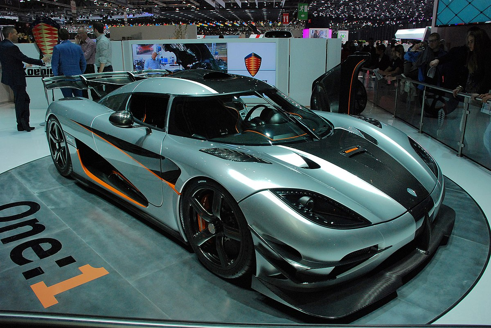

Koenigsegg One:1

Гиперкар производства компании Koenigsegg. Соотношение массы и мощности автомобиля были равны 1:1 (0,99974 лошадиных сил на 1 килограмм), этого раньше не удавалось добиться при производстве серийных автомобилей. Именно из-за такого соотношения автомобиль и был назван «один к одному». Кузов обладает таким весом благодаря тому, что он выполнен из углепластика.